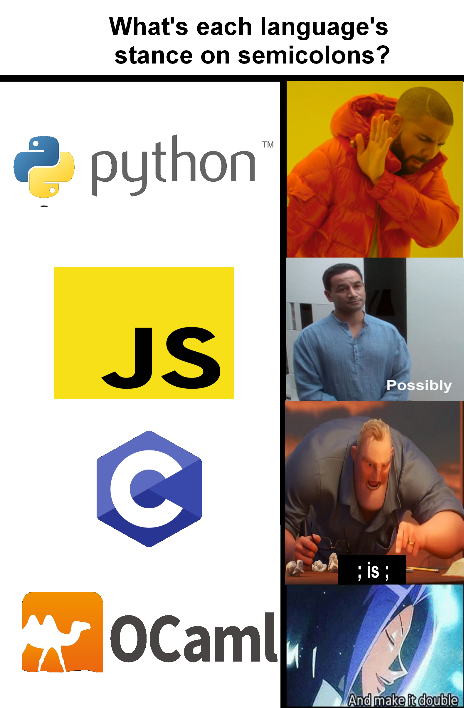

C9 Ocaml : aspects impératifs
"OCaml offers a happy compromise here, making it easy and natural to program in a pure style, but also providing great support for imperative programming"
(Real World OCaml)
Cours
Attention
Ce diaporama ne vous donne que quelques points de repères lors de vos révisions. Il devrait être complété par la relecture attentive de vos propres notes de cours et par une révision approfondie des exercices.
Travaux dirigés
Travaux pratiques
 Exercice 1 : Manipulation des références
Exercice 1 : Manipulation des références
-
Ecrire une fonction
affiche int ref -> unitqui permet d'afficher l'entier dont une référence est passée en argument. -
Ecrire une fonction
echangequi échange le contenu des deux références (sur des objets de même type) donnés en argument. -
Créer une fonction
incrémente int ref -> unitqui ajoute 1 à la valeur contenue dans la référence entière donnée en argument.
Exercice 2 : Manipulation d'enregistrement modifiable
Dans tout la suite, on manipule le type suivant
Aide
On rappelle qu'on peut créer un objet de type fraction avec :
-
Ecrire une fonction
afficherpermettant d'afficher un objet de type fraction -
Rappeler rapidement le principe de l'algorithme d'Euclide permettant de calculer le pgcd de deux entiers. Et en écrire une implémentation récursive en OCaml
-
Ecrire une fonction
simplifie fraction -> unitqui prend en argument une fraction et ne renvoie rien mais modifie la fraction fournie en argument de façon à la rendre irreductible. -
Tester votre fonction sur la fonction
adonnée en ci-dessus
Exercice 3 : Création de tableaux
Les fonctions ci-dessous pourront être utiles pour tester les fonctions des autres exercices :
-
Une fonction
cree_tableauqui prend en argument trois entierstaille vmin vmaxet crée un tableau de tailletaillecontenant des entiers au hasard compris entrevminetvmaxAide
On rappelle que
Random.intprend en argument un entiernet tire au hasard un entier compris entre 0 inclus etnexclus -
Une fonction
affiche_tableauqui prend en argument un tableau d'entiers et affiche les éléments de ce tableau.
Exercice 4 : Rechercher un élément
On veut écrire la fonction appartient 'a -> 'a array -> bool qui renvoie true ou false suivant que l'élément se trouve ou non dans le tableau. Par exemple, appartient 2 [|6; 7; 9; 12 |] s'évalue à false.
-
Proposer une solution utilisant une boucle
for, peut-on quitter la boucle dès que l'élément est rencontré (à la façon de ce qu'on a pu faire à C) pourquoi ? -
Proposer une solution utilisant une boucle
while, cette fois est-il possible de quitter la boucle dès qu'on rencontre l'élément ? -
Proposer une version récursive n'utilisant pas de boucle.
Exercice 5 : Algorithmes classiques (pour réviser)
-
Ecrire en OCaml une fonction permettant de trier un tableau d'éléments par la méthode de votre choix, on rappelle qu'il faut connaitre (et avoir déjà implémenté) au moins une fois :
- le tri par insertion
- le tri par sélection
- le tri à bulles
- le tri fusion
-
Implémenter l'algorithme de recherche dichotomique en OCaml
Exercice 6 : Crible d'Erastothène
On rappelle qu'un nombre premier est un entier naturel ayant exactement deux diviseurs 1 et lui-même, ainsi 13 est premier mais pas 15. Le crible d'Erastothène est un algorithme permettant de trouver tous les nombres premiers inférieurs ou égaux à un entier n donné.
Algorithme
- on crée un tableau de booléens
premiersde taillen+1 - on initialise le tableau à
truesaufpremiers[0]etpremiers[1]qui sont àfalsepuisque \(0\) et 1 ne sont pas premiers. - on parcourt ce tableau si
premiers[i]est àtruealors on met tous ses multiples (sauf lui-même) àfalse - le parcours s'arrête dès que l'entier
iest supérieur à \(\sqrt{n}\).
-
Ecrire une fonction
criblequi prend en paramètre un entiernet implémente cet algorithme de façon à renvoyer le tableau de booléens issu du crible (c'est à dire tel quetab.(i)contienttruesiiest premier etfalsesinon) -
Ecrire une fonction
premiersqui prend en argument un entiern, utilise la fonction précédente puis crée la liste des nombres premiers jusqu'àn. -
Ecrire fonction
somme_premiersqui prend en argument un entierseuilet renvoie la somme de tous les nombres premiers inférieurs ou égaux àseuil. Par exemplesomme_premiers(100)renvoie1060. -
Utiliser votre fonction pour calculer la somme des nombres premiers jusqu'à 100000. Tester votre réponse dans le formulaire suivant :

Humour d'informaticien
